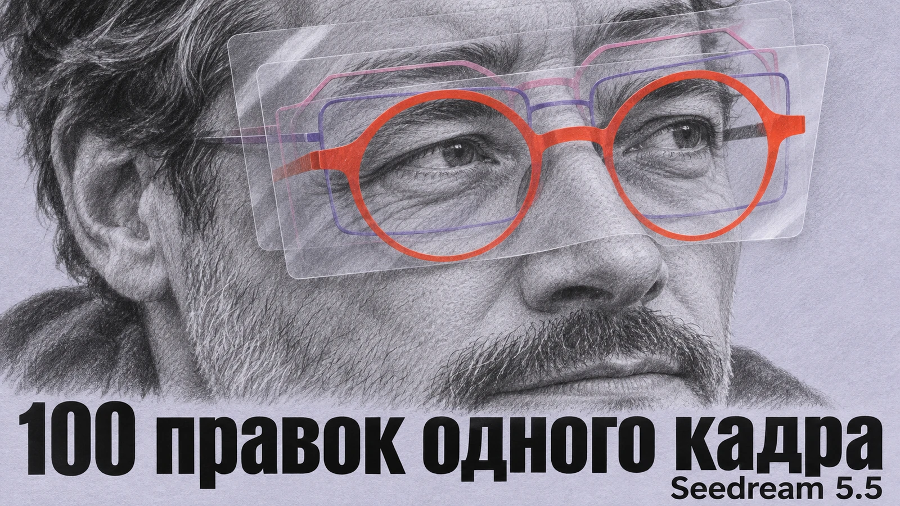

ХПИИ / Каталог / Компании
ByteDance
Генерация видео и другие ИИ-модели ByteDance.
2 материалов в редакционной подборке
Публикации

12 ноября 2026 · Новости ИИ«Остальное не трогай»: ByteDance показала 100 правок одной картинки в Seedream 5.5
ByteDance представила Seedream 5.5 и продемонстрировала 100 последовательных правок одного изображения с сохранением нетронутых областей. Модель также поддерживает прозрачный фон и улучшенную генерацию текста.
 20 октября 2026 · Новости ИИ
20 октября 2026 · Новости ИИПять минут видео из одной картинки. Китайцы выпустили OmniHuman 2.0
15 октября компания ByteDance, которой принадлежит TikTok, выпустила OmniHuman 2.0. Новая версия нейросети умеет создавать непрерывные видеоролики продолжительностью до 300 секунд. И это довольно серьёзное изменение. Раньше подобные инструменты часто приходилось использовать для